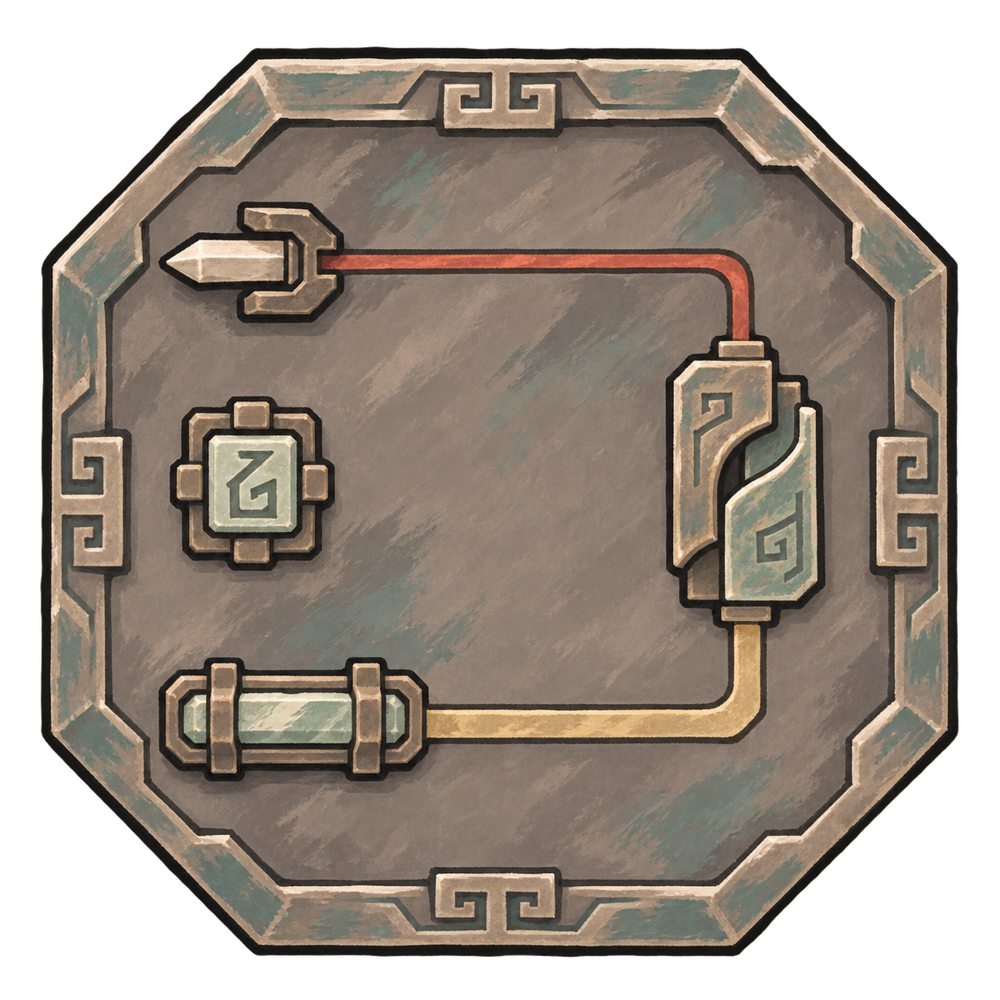

策划对照 · 高阶逻辑
受袭先补防，有余力再转攻
重击、本窗或上一窗密集时保留防护，只停止可选攻击。不会等到第三次才补盾。

先选一个情境
共同回合1 · 完整观测仅为演示参数，改动会重置本情境阵盘启用中
- 当前实际护盾
- 有盾
- 未完成补防 P
- 0 · 无待补防
- 本窗独立受袭
- 0 次
- 当前守备判断
- 尚无新受袭
- 上一窗／观测可信
- 开场 · 无前窗 仅真正开场视为中性
看这一次走哪条路
朱砂色是本次实际经过的流程；中断处会说明原因。
文字节点仅表示策划流程，不是最终元件图标、端口或盘内占格。
送入一次真实变化
每次点击是一整个独立敌方动作，伤害已结算且本人仍可战斗；补盾只保护之后的伤害。本页不猜伤害值。
供能机会使本情境的护持供能通过，再查询P；换回合只更新统计窗口。
同窗多攻仅为观察分路的演示条件；真实图谱的次数限制另行核验。
本次结果
尚无输入先点击轻击或重击。
- 护持
- 未请求
- 可选攻击
- 未请求
- 本次支付
- 无
演示累计提交：护持0次，攻击0次。
查看、调整本情境的执行条件
以下是场景给定的核验结果，不是新硬件数值；更改条件本身不会发动阵法。
护持和后续攻击共用本次原始事件的峰值账本，成功回执不重开额度。攻击提交时再次核验保底预算。
仅调整上面的核验条件，不改P、护盾、观频历史或已付费用；不代表游戏刷新次数。
再看几种边界
重复通知不再计次；停用清P，同窗重启不补旧事件。设为无盾只改变外部状态，不发送新受袭通知。
最近输入与回执
最多保留8条 · 每条显示原始身份与入口- 尚无输入。